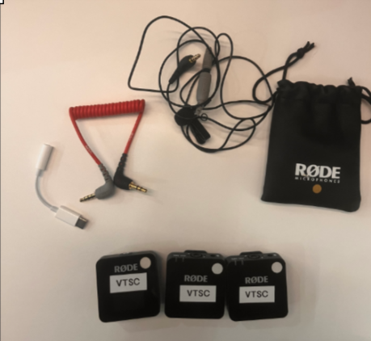
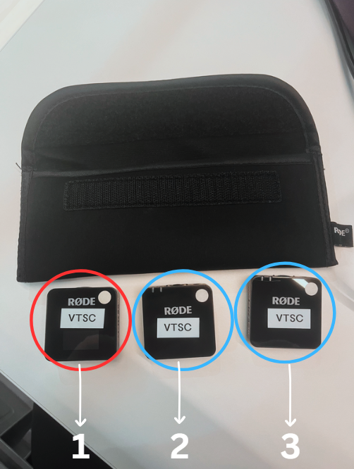
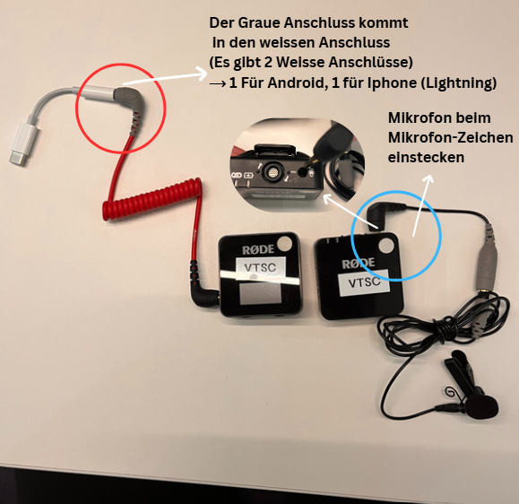

Kabelmikrofon Rodeset

USBC Anschluss: Android, iPhones ab 15Lightning Anschluss: Alte iPhones Unter 15- Mikrofonkabel im kleinen Rodesäckchen (schwarz,grau,kleines Mikrofon)
- Dreier Set Mikrofon und Signalübertrager
- Rotes Kabel mit Anschlüssen an beiden Seiten Schwarz und Grau.

- Mikrofonset (schwarze Tasche)
Sie werden alle einzeln eingeschaltet am weissen Kreis von Unten .
- In der mitte des Signalübertragers ist ein kleines Bildschirm was dafür dient die Frequenz zusehen zusehen ob die Mikrofons genügend Akku haben oder funktionieren.
- Mikrofon was angeschlossen wird
- Ebenfalls ein Mikrofon

Blaue Kreis ist das Mikrofon. Es kann in die Hosentaschen oder in deinem Pulli hineingelegt werden um das Mikrofon zu verstecken.
Rote Kreis ist der Signalnehmer. Es ist am Handy angschlossen mit dem passenden Kabel.Hier ist am schluss dann die Aufnahme vom Ton.